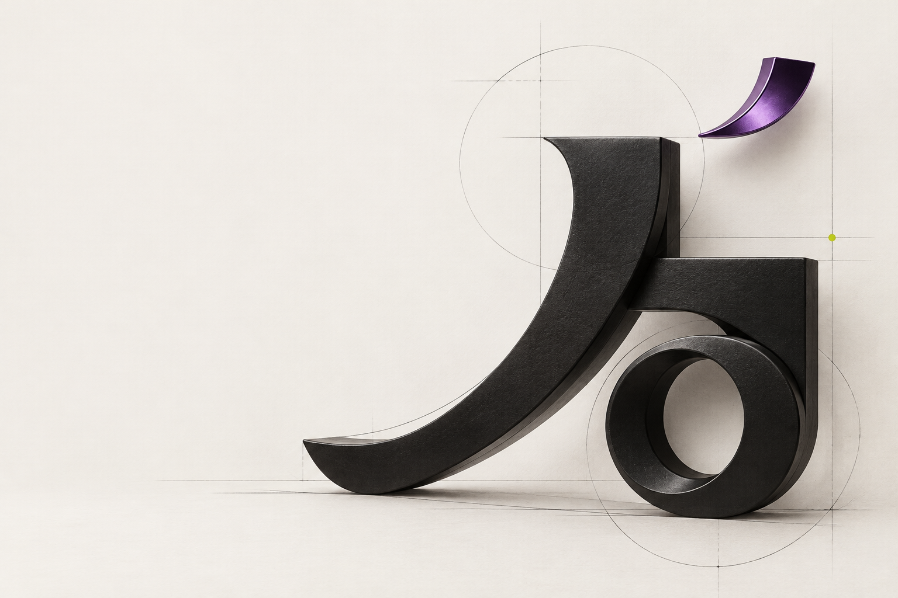
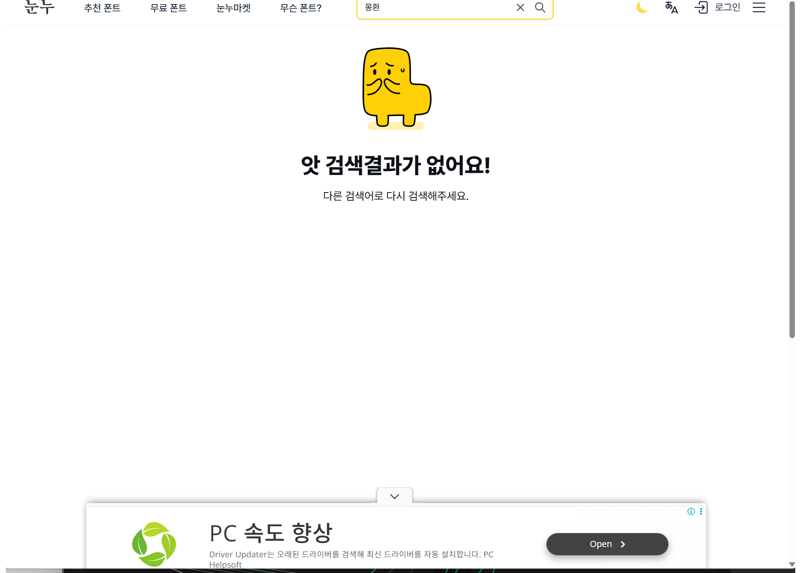

몽환적인 밤
Figma에서 글꼴 바꾸기→화면에 적용해 비교→마음에 드는 후보 찾기
폰트 이름보다 먼저 떠오른 건 원하는 분위기였어요.
실제 Figma 화면은 보존되어 있지 않아, 과정은 설명용 도식으로 표시했어요.
분위기 기반 폰트 탐색과 정밀 편집을 위한
데이터 수집 및 분석 계획
폰트 이름보다 먼저 떠오른 건 원하는 분위기였어요.
실제 Figma 화면은 보존되어 있지 않아, 과정은 설명용 도식으로 표시했어요.
공식 태그와 사람의 분위기 평가가 얼마나 맞는지 비교해요.
폰트 이름·태그 + 참여자의 느낌 평가분위기 후보를 한글·라이선스·조절 조건과 연결해요.
사용 조건을 만족하는 후보 범위 확인서비스 조합과 통합 흐름에서 검색·수정 경험을 비교해요.
시간·조작 단계·완료·재생성·만족도 측정 예정수집한 데이터를 바탕으로, 디자이너가 원하는 분위기의 타이포그래피를 더 쉽게 찾고 자유롭게 다듬을 수 있는 서비스의 구축 방향을 연구하고자 한다.서비스 구현은 확정되지 않았어요. 기존 도구 조합과 통합 방식의 편리함을 향후 사용자 실험으로 비교할 계획이에요.